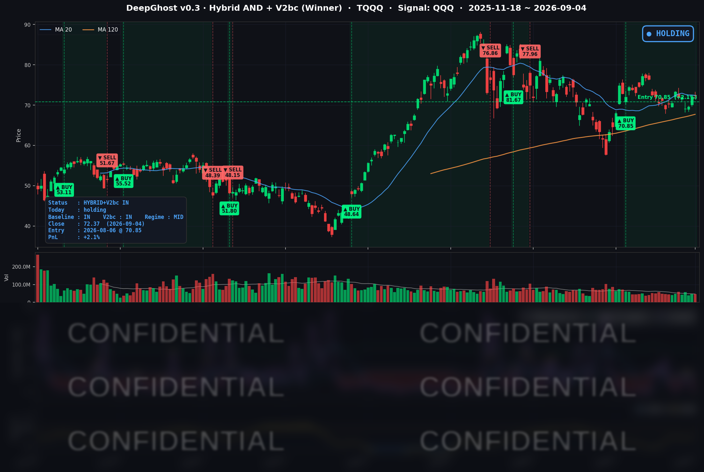

👻 매일 시그널과 히스토리를 홈페이지에서 한눈에 → www.ghostai.co.kr
홈페이지에 회원 페이지가 오픈했습니다. 가입하시면 커버리지 전 종목의 원본 시그널과 분석을 매일 확인하실 수 있습니다.
8월 고용이 예상의 세 배로 나오면서 9월 인상 확률이 58%로 올랐습니다. 그럼에도 불구하고 나스닥이 보합을 지킨걸 보면 투자 심리는 살아 있습니다. 다만, 금리 상승의 압박 카드가 하나 더 나온 것이기 때문에 시장이 안심할 수는 없을 것 입니다.
📊 오늘의 매매 신호
| 항목 | 내용 |
|---|---|
| 오늘 할 일 | ✅ 아무것도 안 해도 됩니다 |
| 포지션 상태 | 📈 TQQQ 보유 중 (IN POSITION) |
| 매수 진입일 | 2026-08-06 (22거래일째) |
| 진입가 → 현재가 | $70.85 → $72.37 |
| 현재 포지션 수익 | +2.15% |
TQQQ 시그널 — IN POSITION
현재 상태: 매수 포지션 유지 중 | 이번 포지션 수익률 +2.15%

나스닥100(QQQ)이 +0.18%, TQQQ는 +0.47% 마감했습니다. 전략의 평가손익은 전일 +1.67%에서 +2.15%로 늘었습니다. 8월 6일 진입 이후 22거래일째 보유 상태이고, TQQQ 쪽에서 새로 발생한 매매 신호는 없습니다.
9월 7일(월)은 노동절로 뉴욕증권거래소가 전면 휴장이라, 9월 4일 다음 거래일은 9월 8일(화)입니다.
오늘 미국 시장 — 시황 요약
지수 마감
| 지수 | 종가 | 등락률 | 비교 기준 |
|---|---|---|---|
| S&P 500 | 7,718.60 | -0.38% | 전일 대비 |
| 나스닥 종합 | 26,506.99 | -0.29% | 전일 대비 |
| 다우존스 | 53,414.25 | -0.51% | 전일 대비 |
| 러셀 2000 | 2,975.65 | +0.25% | 전일 대비 |
| QQQ (나스닥100) | 718.96 | +0.18% | 전일 대비 |
| TQQQ | 72.37 | +0.47% | 전일 대비 |
지수 방향이 갈렸습니다. 나스닥100(QQQ)은 올랐는데 나스닥 종합은 내렸습니다. 상위 100종목을 제외한 종목들이 더 약했다는 뜻입니다. 금리가 오른 날인데 소형주(러셀 2000 +0.25%)가 대형주(S&P 500 -0.38%)를 앞선 것도 빈도가 높은 조합은 아닙니다.
장중 모양은 한 방향이었습니다. S&P 500은 시가 7,750.19가 그날의 고가였고 마감까지 계속 밀렸습니다. 반대로 러셀 2000은 시가가 저가권이었고 종가는 고가 바로 아래입니다.
주간으로 보면(8/28 대비) S&P 500 +0.09%, 나스닥 +0.40%, 다우 -0.27%, 러셀 2000 +0.11%, TQQQ +0.72%로 한 주 동안 지수는 제자리였습니다.
국채 금리 동향
| 만기 | 수익률 | 전일 대비 | 장중 고점 |
|---|---|---|---|
| 3개월 | 3.757% | +1.7bp | +3.0bp |
| 5년 | 4.550% | +4.1bp | +7.3bp |
| 10년 | 4.784% | +2.2bp | +5.0bp |
| 30년 | 5.246% | +0.3bp | +3.0bp |
중간 만기만 올랐습니다. 5년물이 +4.1bp로 가장 많이 오른 반면 30년물은 +0.3bp로 사실상 제자리였습니다. 장기 성장·물가 기대가 아니라 앞으로 몇 분기의 정책금리 경로만 다시 반영됐다는 뜻입니다. 장단기 스프레드(10년−3개월)는 +102.7bp로 정상 커브를 유지하고 있습니다.
장중에는 되돌림이 있었습니다. 발표 직후 5년물은 +7.3bp까지 올랐다가 +4.1bp로, 10년물은 +5.0bp에서 +2.2bp로 절반 가까이 반납했습니다. 지표는 강했지만 채권 시장이 9월 인상을 확정으로 받아들이지는 않았다는 신호입니다.
주간으로는 3개월물 +2.7bp, 5년물 +6.9bp, 10년물 +6.4bp로 한 주 내내 금리가 올랐고 이날이 그 마무리였습니다.
연준 발언 & 금리 패스
9월 5일(토)부터 9월 17일까지 FOMC 블랙아웃입니다. 위원들이 정책 발언을 하지 않으므로, 8월 고용보고서는 9월 15~16일 FOMC 전에 시장에 들어온 마지막 대형 지표였습니다. 이날 금리 움직임에 그만큼 무게가 실렸습니다.
기준선은 전일(9/3) 크리스토퍼 월러 이사의 발언이었습니다. "디스인플레이션에 기회를 주자"며 9월 동결 지지 쪽으로 기울겠다고 했는데, 조건으로 건 것은 물가 지표였지 고용 지표가 아니었습니다. 8월 물가에서 개선이 일시적이었던 것으로 드러나면 인상이 적절할 수 있다는 단서였습니다.
그래서 이번 고용보고서는 그가 건 조건을 직접 건드리지 않습니다. 그럼에도 인상 확률이 49.4%에서 58%로 올라온 이유는, 강한 고용이 "노동시장이 식고 있으니 동결하자"는 반대편 논리를 지웠기 때문입니다. 실제 판가름은 9월 10일 PPI와 9월 11일 CPI에서 납니다.
오늘의 핵심 이슈
-
8월 고용이 예상의 세 배로 나왔습니다. 비농업 신규고용이 +162,000명으로 시장 예상 +53,000명을 크게 넘었습니다. 실업률은 4.1%로 유지됐고 시간당 임금은 전월 대비 +0.3%, 전년 대비 +3.1%였습니다. 6·7월 수치도 위로 고쳐져 두 달 합계 55,000명이 더해졌습니다. 경제활동인구가 683,000명이나 늘었는데도 실업률이 그대로였다는 점이 이 보고서를 특히 강하게 만듭니다. 늘어난 구직자를 노동시장이 그대로 흡수했다는 뜻이기 때문입니다.
-
지수는 제자리였지만 오른 종목은 셋 중 하나뿐이었습니다. S&P 500이 -0.38%로 끝나 지표 강도에 비하면 거의 반응하지 않은 것처럼 보입니다. 그러나 502종목 중 오른 종목은 34.3%뿐이고 중앙값은 -0.57%였습니다. 지수가 버틴 것은 크게 오른 소수 종목이 넓은 약세를 상쇄했기 때문입니다. 지수 등락률만으로는 이날의 움직임을 판단할 수 없는 구도입니다.
-
반도체와 소프트웨어가 하루 만에 자리를 바꿨습니다. 반도체 21종목은 중앙값 +3.52%로 95%가 올랐고, 소프트웨어 20종목은 중앙값 -3.47%로 15%만 올랐습니다. 전일(9/3)은 정확히 반대였습니다. 상승은 메모리·스토리지에 몰렸습니다 — 샌디스크 +11.90%, KLA +7.32%, 시게이트 +6.34%, 마이크론 +6.10%. AI 메모리 수요가 계속 강하다는 인식이 배경입니다. 이틀 연속 로테이션 방향이 뒤집힌 셈입니다.
변동성 & 투자심리
VIX는 14.53으로 전일 대비 +1.47% 움직였습니다. 장중 범위도 13.80~14.58에 그쳤습니다. 고용지표가 예상을 세 배 웃돈 날인데 변동성 지표는 사실상 반응하지 않았습니다. 8월 28일 종가(14.43) 대비 주간으로도 +0.69%입니다. 옵션 시장은 이 지표를 위험 이벤트로 보지 않았다는 뜻입니다.
공포탐욕지수는 약 43으로 Fear 구간입니다. 지수가 고점 근처인 것과 견주면 심리는 앞서 나가지 않은 상태입니다.
정리하면 시장은 이번 지표를 "인상 확률 상승"으로는 받아들였지만 "경기 훼손"으로는 받아들이지 않았습니다.
매크로 & 원자재
| 품목 | 종가 | 등락률 | 비교 기준 |
|---|---|---|---|
| WTI 원유 | $91.22 | -0.09% | 전일 대비 |
| Brent 원유 | $95.83 | +0.32% | 전일 대비 |
| 금 선물 | $4,477.20 | -0.32% | 전일 대비 |
| 금 ETF (GLD) | $406.77 | -0.84% | 전일 대비 |
하루 변동은 크지 않았지만 주간으로는 유가가 크게 올랐습니다. WTI는 한 주 동안 +9.38%, Brent는 +7.30% 상승했습니다. 에너지 가격이 이 속도를 유지하면 다음 물가 지표에 부담으로 작용할 수 있고, 이는 월러 이사가 동결 조건으로 건 물가 경로와 직접 맞닿습니다.
금은 이틀 만에 내렸습니다. 금리가 오른 것과 방향이 맞습니다.
주요 종목 동향
| 종목 | 종가 | 등락률 | 비고 |
|---|---|---|---|
| MU | 1,016.59 | +6.10% | AI 메모리 수요 지속, 메모리 업종 동반 상승 |
| INTC | 95.80 | +4.51% | 파운드리 로드맵 진전·외부 고객 관심 |
| META | 616.77 | +1.00% | 개별 이슈 없음, 커버리지 빅테크 중 상승폭 1위 |
| NVDA | 230.36 | +0.84% | 반도체 강세에 동참했으나 업종 중앙값(+3.52%)에는 크게 못 미침 |
| AVGO | 357.89 | +0.21% | 9/2 가이던스 하회 여파에서 이틀째 횡보 |
| QCOM | 168.74 | +0.10% | 사실상 보합 |
| AMZN | 258.51 | -0.15% | 시가 +0.12%로 출발해 장중 -0.27% |
| GOOGL | 338.46 | -1.17% | 개별 이슈 없이 장중 하락 |
| MSFT | 499.70 | -2.04% | 소프트웨어 업종 약세와 동행, 500달러 아래 마감 |
| AAPL | 319.97 | -2.51% | 시가 +0.03% 후 하락 전부가 장중에서 발생 |
| NFLX | 78.25 | -5.35% | 신규 개별 재료 없음, 아래 별도 서술 |
| TSLA | 354.08 | -5.92% | 시가에 -3.77% 갭 하락, 사이버캡 공개 행사 실망 + NHTSA 감사 |
넷플릭스(NFLX) -5.35% — 이날 회사 발표나 등급 변경 같은 새로운 재료는 없었습니다. 하락은 금리 상승이 밸류에이션 배수가 가장 높은 종목에 집중적으로 작용한 결과로 보는 것이 타당합니다. 넷플릭스의 후행 P/E는 약 31배로 디즈니(약 15배)의 두 배여서, 할인율이 오를 때 가장 크게 반응하는 자리에 있습니다. 같은 날 디즈니와 워너브러더스디스커버리의 낙폭이 훨씬 작았던 점도 이 해석과 맞습니다. 시가 -0.60%에서 출발해 장중에 -4.77%가 더해졌으니, 밤사이 뉴스가 아니라 금리가 오른 정규장 시간대에 하락이 진행됐습니다.
테슬라(TSLA) -5.92% — 성격이 다릅니다. 낙폭의 3.77%p가 이미 개장 갭에 반영돼 있었습니다. 사이버캡 공개 행사가 기대에 못 미친 데다 도로교통안전국(NHTSA)이 자체인증 절차 감사에 착수한 것이 겹쳤습니다. 금리 때문에 밀린 종목이 아니라 개별 재료로 내린 종목입니다.
하락한 대형 기술주의 공통점은 애플·마이크로소프트·알파벳·아마존·넷플릭스 모두 시가가 전일 종가 근처에서 시작해 하락분 대부분이 장중에 쌓였다는 점입니다.
다음 거래일 일정
- 9월 7일(월) 노동절 — 뉴욕증권거래소 전면 휴장. 9월 중 조기 폐장일은 없습니다.
- 9월 8일(화) 재개장 — 사흘치 뉴스가 한 번에 반영됩니다. 주말 유가·지정학 뉴스가 개장 갭에 나타날 수 있습니다.
- 9월 10일(목) 8월 PPI, 9월 11일(금) 8월 CPI — 월러 이사가 조건으로 지목한 물가 지표 두 개입니다. 9월 FOMC를 사실상 결정합니다.
- 9월 15~16일 FOMC — 경제전망요약(SEP)이 함께 나오는 회의입니다. 블랙아웃 기간이라 그 전까지 연준 발언으로 방향을 가늠할 수는 없습니다.
- 업종 관점 — 반도체와 소프트웨어가 이틀 연속 반대로 움직였습니다. 재개장 후 이 로테이션이 이어지는지, 한쪽으로 되돌리는지가 지수보다 먼저 볼 지점입니다.
Ghost.AI — Quantitative AI Investment
Model: DeepGhost v0.3 | Transformer-Based Deep Learning
Coverage: 13 tickers | Updated every trading day after US market close
⚠️ 본 자료는 정보 제공 목적으로만 작성되었으며 투자 권유가 아닙니다. 모든 투자의 책임은 투자자 본인에게 있습니다. 과거 성과가 미래 수익을 보장하지 않습니다.
[유의사항]
- 본 서비스는 불특정 다수를 대상으로 발행되는 단방향 정보 제공 서비스이며, 투자자 개인의 재산 상황·투자 목적·위험 선호도를 반영한 개별 투자 조언이 아닙니다.
- 고스트에이아이 주식회사는 고객과 쌍방향 의사소통(개별 상담, 맞춤형 자문 등)을 제공하지 않습니다.
- 본 콘텐츠는 투자 권유 또는 매매 주문의 청약·청약의 권유에 해당하지 않으며, 최종 투자 판단 및 그에 따른 손익의 책임은 전적으로 투자자 본인에게 있습니다.
고스트에이아이 주식회사